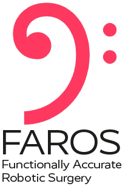

Acknowledgements
This research is supported by The Alan Turing Institute, United Kingdom and has received funding from the European Union’s Horizon 2020 research and innovation programme under grant agreement No 101017008, Enhancing Healthcare with Assistive Robotic Mobile Manipulation (HARMONY). This work was supported by core funding from the Wellcome/EPSRC [WT203148/Z/16/Z; NS/A000049/1]. This project has received funding from the European Union’s Horizon 2020 research and innovation programme under grant agreement No 101016985, Functionally Accurate RObotic Surgery (FAROS project). This research is supported by Kawada Robotics Corporation and the Honda Research Institute Europe.
{kind=link}
{kind=link}
{kind=link}
The main contributors to the development of the ROS-PyBullet Interface are as follows.
Christopher E. Mower, King’s College London, UK.
Theodoros Stouraitis, Honda Research Institute, Offenbach, Germany.
Lei Yan, Harbin Institute of Technology, Shenzhen, China.
João Moura, University of Edinburgh, Edinburgh, UK.
Christian Rauch, University of Edinburgh, Edinburgh, UK.
Nazanin Zamani Behabadi, London, UK.
Michael Gienger, Honda Research Institute, Offenbach, Germany.
Christos Bergeles, King’s College London, UK.
Sethu Vijayakumar, University of Edinburgh, Edinburgh, and The Alan Turing Institute, UK.